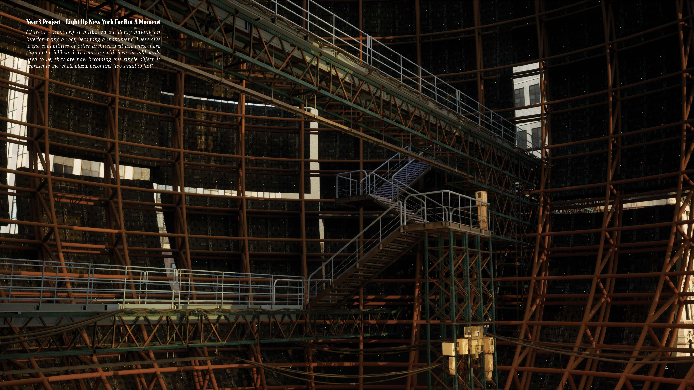
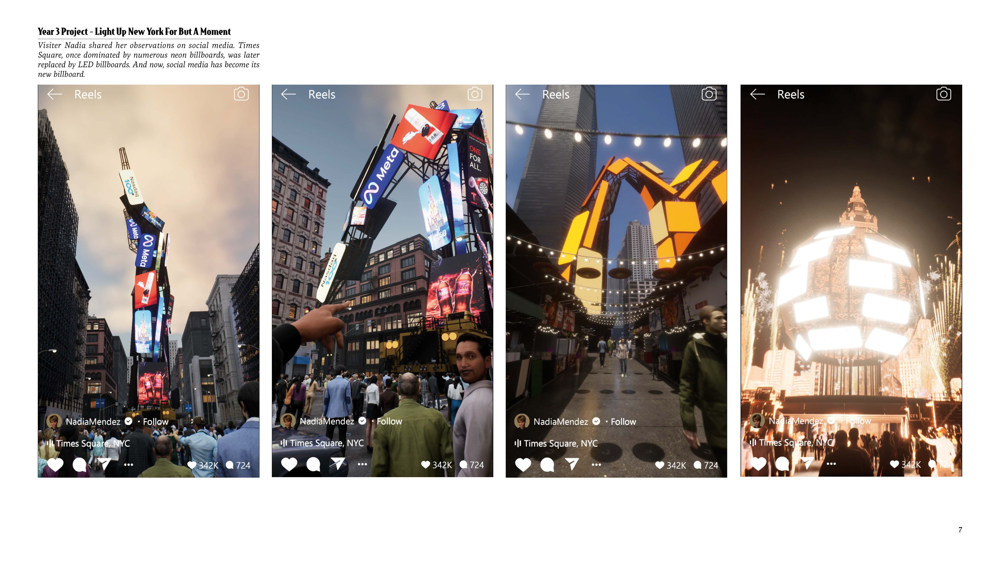
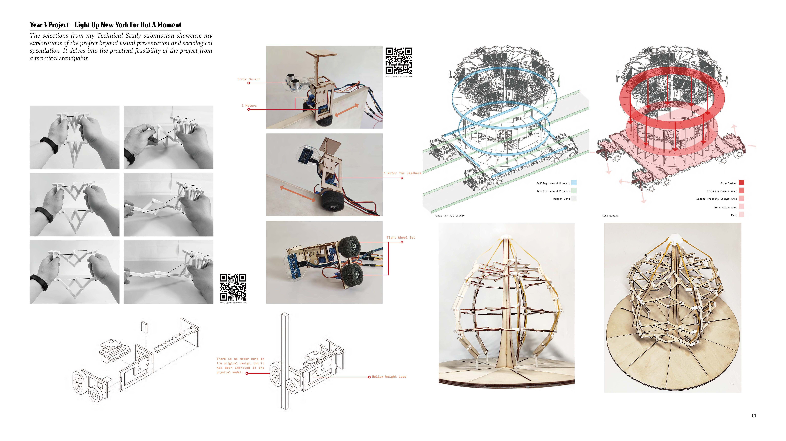
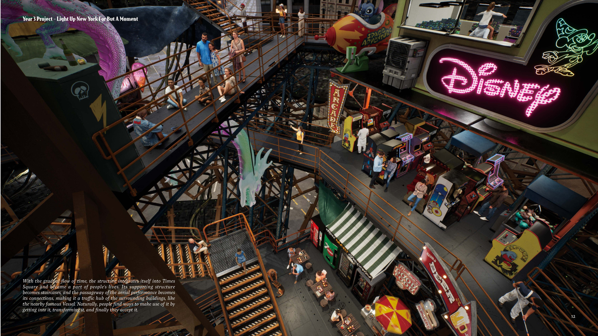

Light Up New York For But A Moment
Deconstructing Times Square's billboard culture to reimagine the New Year's Ball Drop: a thought experiment on whether a Capitalocene-driven future is truly the one we seek.
The streets circling Broadway are legendary for their overwhelming billboard spectacle. But if every billboard were torn down and gathered into a single mass at the heart of Times Square — what monstrous form would emerge? And within its tangled body, what new spaces might take shape?
When this media monster transforms into a float drifting down Broadway, shifting its form over time to mirror the projections of local culture, how might the intervention of social media stir the tides and tempests of public opinion?
This project is not only an exploration of a thought experiment, but also a practical test of its feasibility from an applied perspective, encompassing interactive programming, model-making, and technical analysis.
imes Square as the relic of the ball drop ceremony, how will people come to accept—or respond to—this monument to the ephemeral?

The media monster has ultimately completed its rebirth, blending into the cityscape—yet it remains irreducibly alien, standing alone like a monumental focal point of concentrated capitalist power, quietly asking: Is this the future we truly desire?
Project Video
Main project film, 8 minutes in length.
Mechanical experiment video series.